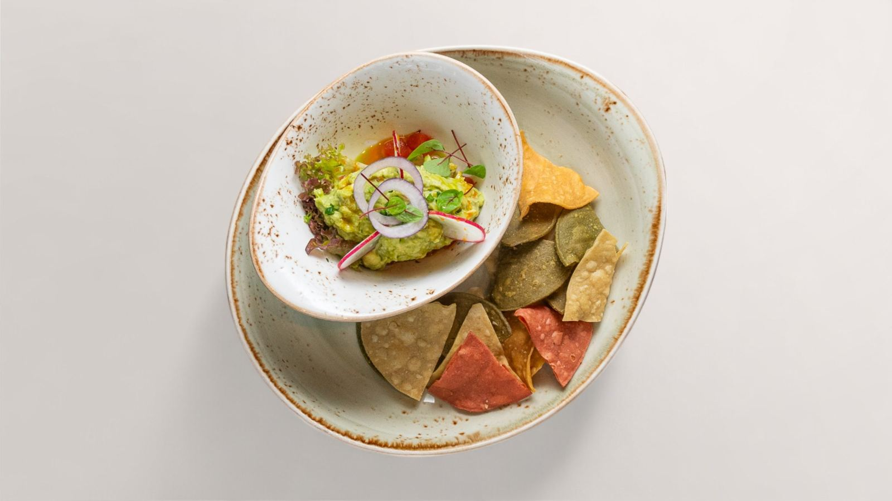
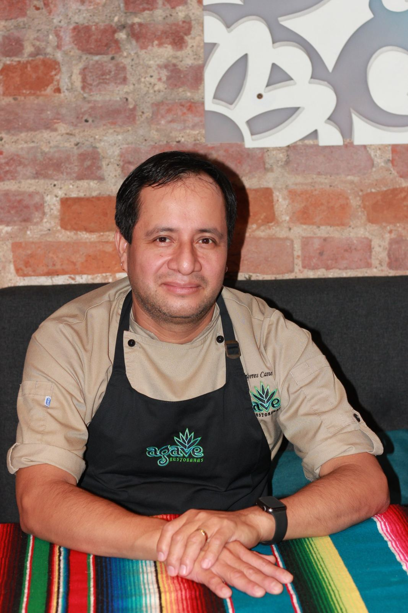
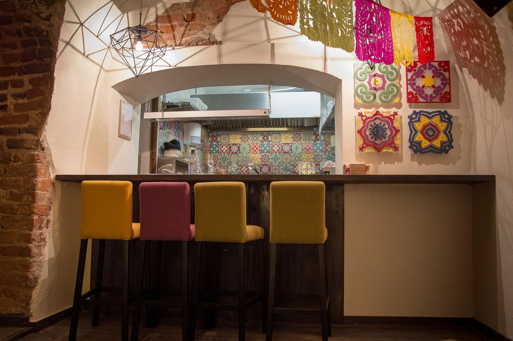
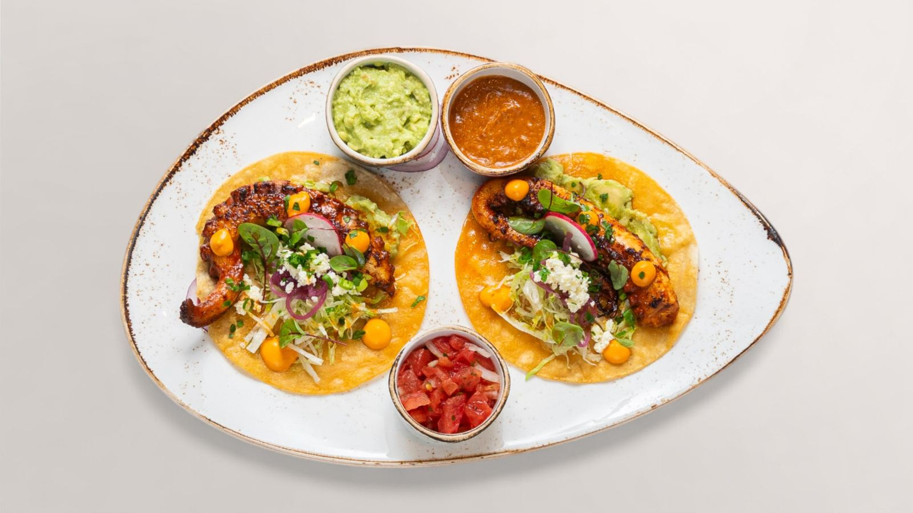
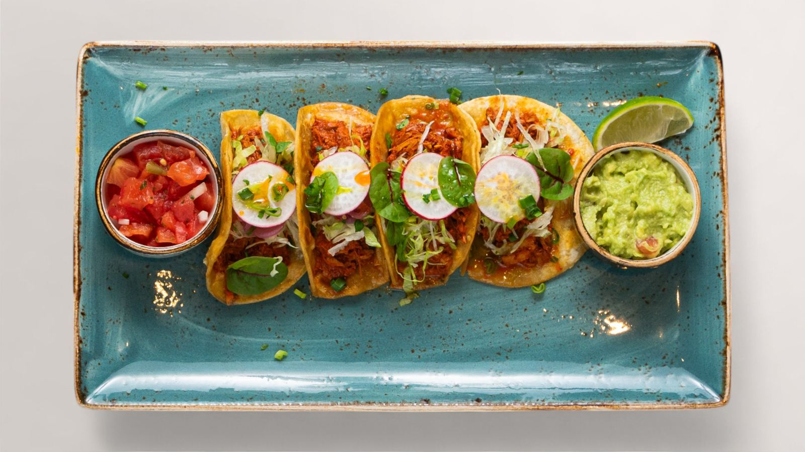
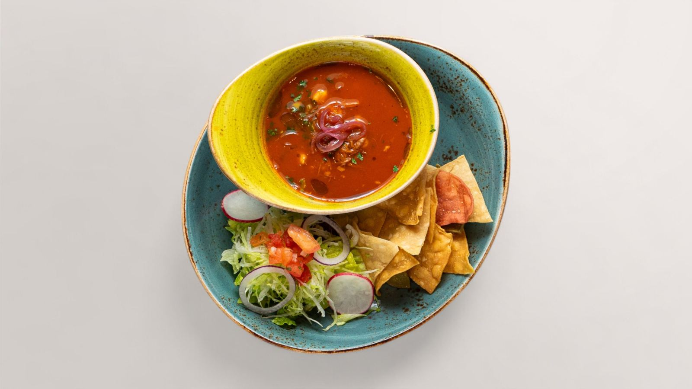
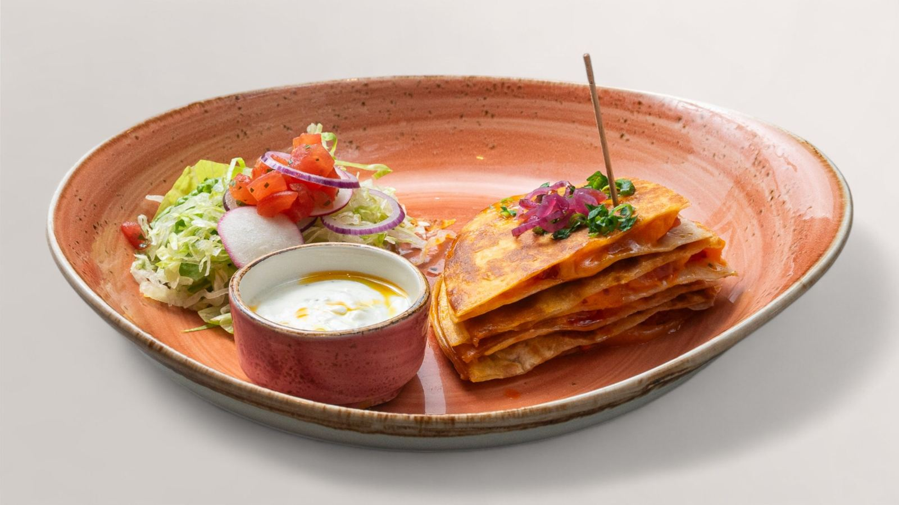
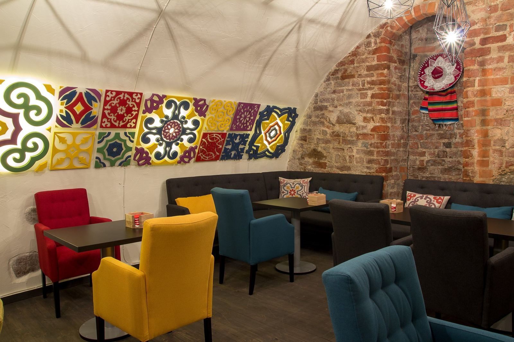
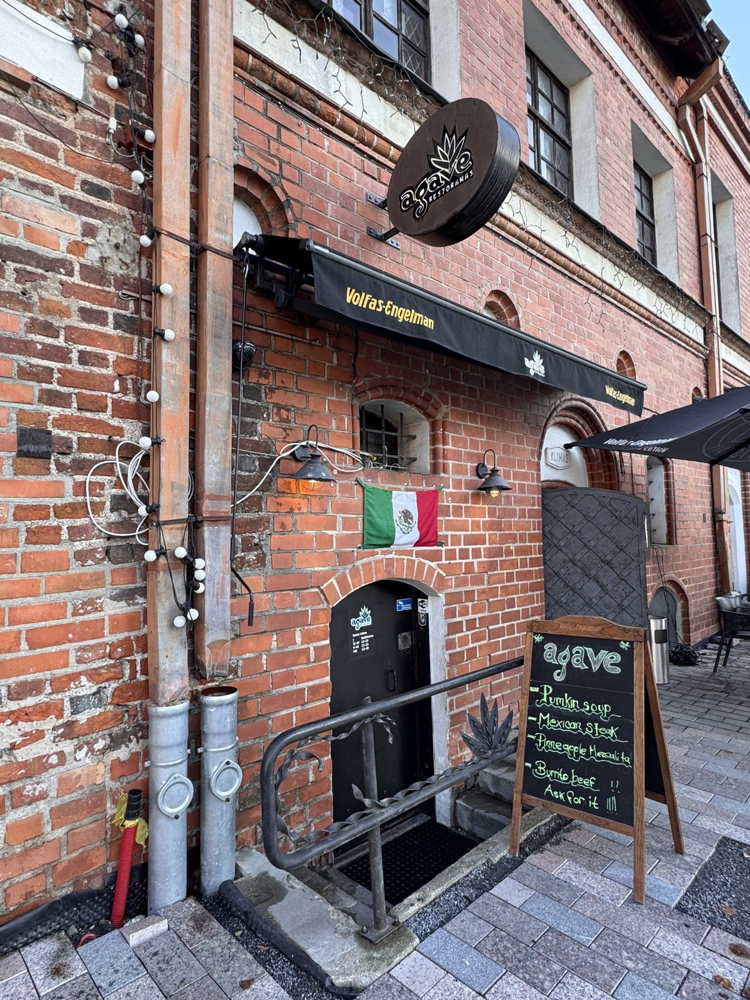

Guacamole con Totopos 11,50 €
Dubenėlyje su kukurūziniais traškučiais. Jį dalinatės.
Ką užsisakyti, kad nereikėtų spėlioti. Trys dalykai, kuriuos verta žinoti prieš ateinant. Perskaitysite per dvi minutes.

Pirmą kartą naujoje vietoje visada truputį neramu. Ką užsisakyti. Ar bus per aštru. Ar pataikysi.
Agave yra meksikietiškas restoranas Kauno senamiestyje, nuo 2014 metų. Minkštos kukurūzų tortilijos, iš Meksikos atkeliavę prieskoniai ir atvira virtuvė, kurioje matote, kaip gaminama.
Jūratė

Pirmas dalykas
Dažniausia baimė yra ta, kad bus per aštru. Pas mus šis klausimas išspręstas dar virtuvėje.

Užsisakydami pasakykite vieną žodį:
neaštriai
Nereikia aiškintis. Padavėjas to klausia kasdien.
Antras dalykas
Pasirinkite, kaip ateinate. To visiškai pakaks.

Dubenėlyje su kukurūziniais traškučiais. Jį dalinatės.

Per naktį marinuota kiauliena minkštose kukurūzų tortilijose. Keturi vienetai.

Meksikietiška sriuba.

Įdarą renkatės: vištiena, chorizo arba marinuoti kaktusai.
Ilgiau gaminami tik trys patiekalai: Pescado Jarocho, Pollo Borracho ir Alambre. Apie dvidešimt minučių. Visa kita ateina greičiau.
Sūris tortilijoje. Nieko aštraus. Vaikai valgo pirmiausia ją.
Ir vienas dalykas, kurio niekas garsiai neklausia. Tortilija imama į ranką. Peilio nereikia.

Trečias dalykas
Antradienį, trečiadienį ir ketvirtadienį salėje daugiau vietos ir daugiau tylos. Girdisi, ką sako žmogus, sėdintis prieš Jus.
Atskiro dienos pietų meniu nėra. Visą dieną gaminame viską, kas yra meniu. Tad ateiti vidury dienos galima ir verta.
Tai patiekalas, kuriam būtent tą dieną gavome šviežių produktų. Visa Dorado žuvis, ceviche, austrės. Meniu jo nėra. Tiesiog paklauskite, kas šiandien.

Rotušės a. 3, Kaunas
Arba telefonu +370 (616) 98 496
Jei šiandien dar neplanuojate, tiesiog išsisaugokite šį puslapį. Jis palauks to vakaro, kai reikės nuspręsti, kur eiti.
¡Hasta pronto! Iki susitikimo!